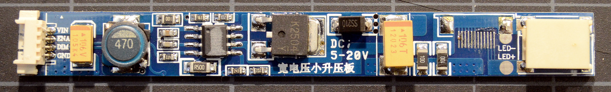

LED Backlight Kits for Thinkpads
for the X60, X60s, X60t, X61t, X61s, and X61t in particular
Update 20150526 and Warning: These modding pages are unmaintained; they're still here for historical reasons. All of the LED kits I've tried from Chinese vendors have one drawback or another and I want the best possible conversion results. Rather than coming up with more and more complicated modifications to fix the shortcomings of existing kits, I eventually decided it was much easier to design and make my own driver boards that were designed specifically for Thinkpads.
Several vendors sell generic CCFL to LED backlight upgrade kits, and a few sell upgrade kits tailored to specific Thinkpad models. The generic kits can be modded to work with a Thinkpad reasonably easily, and the specific kits can be modded to work better than they would otherwise.
A partial list of vendors that carry at least one of the kits below:
As frustrating as it may be, the Chinese vendors switch up specific kits all the time. They usually consider the kits to be interchangeable and send whatever they have in stock that week, product description and photos be damned. You don't know for sure what you're getting until you look at the driver board after the kit arrives. Below are a few of the kits in the wild as of August 2014.
| notes | dim range | ~cost | |
|---|---|---|---|
| PWM-mode mod |
boost, 30-50V output 10 LED strings minimum for 20V input |
6:1 | $15-$20 |
|  | |||
|
|||
This driver is a simple boost convertor with constant-current output. Some vendors sell it with an additional flat-ribbon connector, most sell it with the ribbon connector missing and those solder pads left bare as in the pic above.
The LEDs provided with the kit must be arranged in at least 10S strings for Thinkpads with internal 20V power (like the X60/61-series) else the LEDs will never go out completely even when the machine is 'off'. It seems these 12.1"/255mm kits usually come with 60 LEDs in 10S/6P; that works fine.
This board requires modification to work with a Thinkpad. It can be trimmed and grafted onto existing inverter boards easily.
...more information| notes | dim range | ~cost | |
|---|---|---|---|
| stock (no mod) |
boost, 30-50V output, fault sensing 8 LED strings minimum for 20V input |
6:1 | $55-$70 |
| high-frequency PWM mod | 5.5:1 | ||

|
|||
|
|||
This is a much smaller boost controller than the Simpleboost kit with a nicer driver IC. I've only seen it pre-grafted onto inverter boards in specialized kits for specific laptop models, usually replacing the coils under the copper-colored EMI shield. In the pic above, it's been fitted to an X61T inverter board as part of an X60T/X61T kit from xccfl.com.
These model-specific kits can be dropped right into a Thinkpad without any modification or soldering. The stock board is set up to use low-frequency PWM for a 6:1 brightness control range. With a simple mod (that does require some soldering) it can use high-frequency (24kHz) PWM instead, eliminating any hint of flicker but reducing the dimmable range slightly. These kits are pricey: currently $35 to $45 plus DHL express shipping from China (another $20-$30).
...more information| notes | dim range | ~cost | |
|---|---|---|---|
| PWM-mode mod |
buck, 8-12V output 3 LED segments, 9.6V nominal |
9:1 | $15-20 |

|
|||
|
|||
At first I thought this was a slightly different version of the Simpleboost as it uses mostly the same components and the same boost controller IC. Upon closer inspection, it's arranged as a low-side buck-down controller instead! This is a weird/clever design that mostly ignores the IC's spec sheet, but works well. The board can be set up to drive any 9.6V constant-current LED backlight strip.
Update and Warning: Oh well, it seemed like it worked well enough. I've since gotten boards that flicker noticably with the slightest shift in input voltage, eg with processor load, regardless of the mod used. There's no correcting the problem no matter how fancy the mod--- it's a consequence of lobotomizing a boost controller to use it in buck mode.
Warning #2: As shipped, the boards I bought for evaluation were configured to put out far too much current for the 12.1"/255mm LED strips included. Do not try to test this kit without reading the modding page, or you'll probably damage the LED strip!
This board requires modification to work with a Thinkpad. It is a little harder to graft onto existing inverters due to its size, but it can be done.
...more information| notes | dim range | ~cost | |
|---|---|---|---|
| PWM-mode mod |
buck, 8-12V output 3 LED segments, 9.6V nominal |
8:1 | $12-17 |

|
|||
|
|||
This appears to be another vendor's direct copy of the Unboosty kit above. It's the same circuit on a different PCB using a smaller inductor and configured to put out lower current by default.
Like the Unboosty, this kit requires modification to work with a Thinkpad. It's a bit easier to render into a compact form.
Update and Warning: Like the original Unboosy, these boards can flicker noticably with the slightest shift in input voltage, eg with processor load, regardless of the mod used. There's no correcting the problem no matter how fancy the mod--- it's a consequence of lobotomizing a boost controller to use it in buck mode.
...more information| notes | dim range | ~cost | |
|---|---|---|---|
| PWM-mode mod |
buck, 8-12V output 3 LED segments, 9.6V nominal |
6:1 | $10-12 |
| continuous-drive mod | 5.25:1 | ||

|
|||
|
|||
This board is sold by multiple vendors in 'non-dimmable' LED kits. Those I've contacted are very very insistent there's no way this driver board can dim, and I'd need to buy a different [more expensive] kit to do so.
Pah! It dims perfectly well. The datasheet is very clear on that point, as are actual test results. Like with the other drivers, PWM mode allows a 6:1 dimming range. The output is compatible with 9.6V constant-current LED strips.
This is the cheapest of the boards/kits, going for as little as $6+shipping, though that will come out to more after considering the parts needed for the Thinkpad-required modifications. This is also the smallest of the driver boards and, fitted with a lower profile inductor, could possibly squeeze into places the other kits would not.
...more information{kind=link}